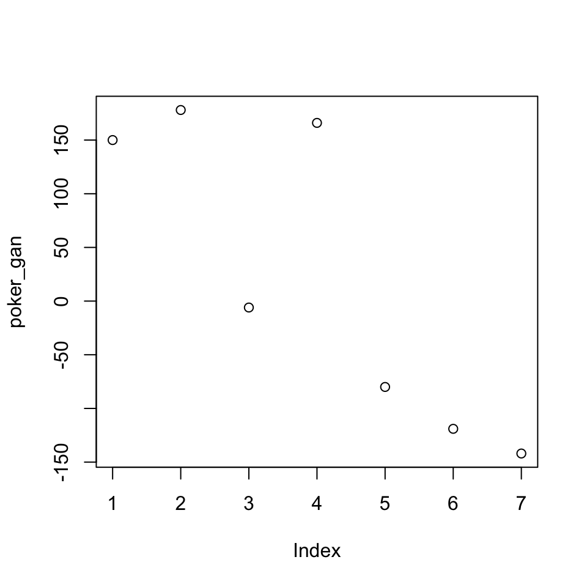

3.1 Vector
3.1.1 Tipo de vectores
En R existen tres clases principales de vectores y se crean con la función combine c() .
- Numérico
num_vec <- c(-1, 2.5, 3, 4, 5.1)- Caracter
cha_vec <- c("Mon", "Tue", "Wed", "Thu", "Sat", "Sun")- Lógico
boo_vec <- c(TRUE, FALSE, FALSE, TRUE, TRUE, FALSE)<-.
La función class() nos dice cuál es la clase o tipo del vector.
class(num_vec)## [1] "numeric"Otra función importante es length() que nos dice cuál es la longitud del vector.
length(num_vec)## [1] 5Ej: Ganancias - Ruleta y poker.
Mis ganancias de poker por día de la semana son:
poker_gan <- c(150, 178, -6, 166, -80, -119, -142)
print(poker_gan)## [1] 150 178 -6 166 -80 -119 -142Mis ganancias en ruleta son:
- lunes -48
- martes 151
- miercoles 198
- jueves -16
- viernes 134
- sábado -153
- domingo 126
Usando la función combine c() asigna las ganancias por día al vector ruleta_gan.
ruleta_gan <- c()
print(ruleta_gan)3.1.2 Nombres de vectores
La función names() nos permite nombrar los elementos de cada vector.
Por ejemplo, a cada elemento de las ganancias de poker del ejercicio anterior, asignaremos el nombre del día de la semana en que se obtuvieron.
dias <- c("Mon", "Tue", "Wed", "Thu", "Fri", "Sat", "Sun")
names(poker_gan) <- dias
print(poker_gan)## Mon Tue Wed Thu Fri Sat Sun
## 150 178 -6 166 -80 -119 -142Ej: Días - Ruleta y poker.
Asigna los nombres del día de la semana a cada elemento del vector de las ganancias de ruleta.
names(ruleta_gan) <-
print(ruleta_gan)3.1.3 Selección de elementos en vectores
La selección de elementos de un vector se realiza indicando las posiciones a seleccionar entre [ ].
Estas posiciones pueden indicarse por medio de un vector numérico o de caracteres si los elementos del vector están nombrados.
- Vector numérico:
poker_gan[ c(1, 5) ]## Mon Fri
## 150 -80La funcion seq() o el uso de dos puntos : permiten crear un vector de secuencias numéricas:
poker_gan[ 1:3 ]## Mon Tue Wed
## 150 178 -6poker_gan[ seq(from = 7, to = 5) ]## Sun Sat Fri
## -142 -119 -80- Nombres:
poker_gan[ c("Mon", "Tue")]## Mon Tue
## 150 178Ej: Miercoles - Ruleta y poker.
Extrae las ganancias de ambos juegos del día miercoles y calcula la ganancia total de ese día.
wed_gan <- poker_gan[ ] + ruleta_gan[]
print(wed_gan)3.1.4 ¿Qué pasa si sumamos los días de fin de semana?
Seleccionamos únicamente los días de fin de semana para ambos juegos.
poker_fin <- poker_gan[ dias[5:7] ]
poker_fin## Fri Sat Sun
## -80 -119 -142ruleta_fin <- ruleta_gan[ 5:7 ]
ruleta_fin## Fri Sat Sun
## 134 -153 126¿Qué pasa cuando sumo los vectores?
poker_fin + ruleta_fin## Fri Sat Sun
## 54 -272 -16Element wise:
En R para cualquier operación (+, -, *, /) de vectores, las operaciones son elemento a elemento (element wise).
Por ejemplo, al sumar vectores:
la primera posición del primer vector se suma con la primera posicion del segundo vector,
la segunda posición del primer vector se suma con la segunda posicion del segundo vector
Ej: Diario - Ruleta y poker.
Calcula las gananacias diarias y asignalas al objeto diario_gan. ¿Qué día se gana más y qué día se pierde más?
diario_gan <- Usando el vector diario_gan y la función sum() calcula las ganancias totales de la semana.
sum(diario_gan)¿Me conviene seguir jugando?
## Mon Tue Wed Thu Fri Sat Sun
## 102 329 192 150 54 -272 -163.1.5 Comparación de elementos
La comparación de elementos se realiza con los siguientes comandos:
>mayor a>=mayor o igual<menor a<=menor o igual a==igual a!=distinto de%in%contenido en
Este tipo de operaciones regresan un vector lógico dependiendo si la condición se cumple o no.
poker_gan## Mon Tue Wed Thu Fri Sat Sun
## 150 178 -6 166 -80 -119 -142poker_pos <- poker_gan >= 0
print(poker_pos)## Mon Tue Wed Thu Fri Sat Sun
## TRUE TRUE FALSE TRUE FALSE FALSE FALSEEste vector lógico también nos ayuda a seleccionar los elementos del vector que cumplen la condición.
poker_gan[poker_pos]## Mon Tue Thu
## 150 178 166El comando %in% regresa un vector lógico si los elementos indicados están contenidos en el vector.
ciudades <- c("Aguascalientes", "Aguascalientes",
"Monterrey", "Monterrey",
"Guadalajara",
"Mexico", "Mexico")
ciudades_cond <- ciudades %in% c("Mexico", "Monterrey")
ciudades_cond## [1] FALSE FALSE TRUE TRUE FALSE TRUE TRUEsum(ciudades_cond)## [1] 4Otra función importante es la función which(), que regresa las posiciones numéricas del vector en las que se cumple la condición:
ciudades_pos <- which(ciudades_cond)
ciudades_pos## [1] 3 4 6 7ciudades[ciudades_pos]## [1] "Monterrey" "Monterrey" "Mexico" "Mexico"3.1.6 Gráfica de vectores
En R existe la función plot()que permite crear graficas usando vectores numéricos.
plot(x = poker_gan)
plot(x = poker_gan, y = ruleta_gan)
Un histograma del vector se crea con la función hist().
hist(x = poker_gan)
3.1.7 Vectores de distribuciones
En R existen funciones que generan vectores de realizaciones aleatorias de distribuciones probabilisticas.
- Distribución Normal:
norm_vec <- rnorm(n = 100, mean = 0, sd = 10)
hist(norm_vec)
- Distribución Uniforme:
unif_vec <- runif(n = 100, min = 10, max = 100)
hist(unif_vec)
Ej: Normal
Usando la función rnorm() genera 1000 realizaciones de una distribución con media \(\mu\) 10 y desviación estándar \(\sigma\) 5.
norm1000_vec <- rnorm()Realiza un histograma del vector obtenido.
hist()